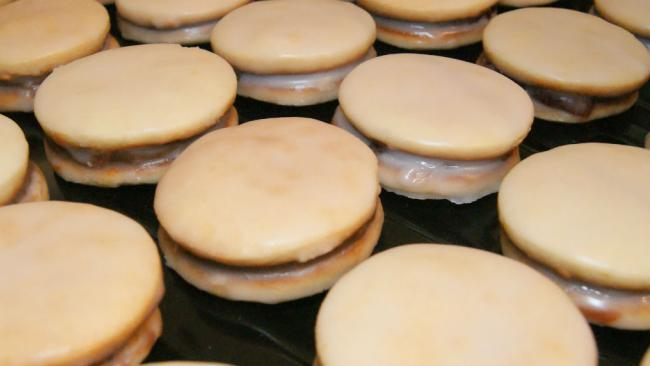

Con esta simple receta podés hacer unas 3 docenas de
alfajorcitos cordobeses. ¡Manos a la obra!

Ingredientes
500 g harina 0000
400 g dulce de leche
150 g azúcar impalpable
120 g margarina
3 huevos
10 g polvo para hornear
10 g bicarbonato de amonio
15 g extracto de malta
50 g miel
Para el baño
400 g azúcar impalpable
agua
jugo de limón
Preparación
Precalentar el horno a fuego mínimo
Tamizar harina, polvo de hornear y bicarbonato de amonio
Cremar margarina y azúcar impalpable.
Luego agregar los huevos, miel y extracto de malta
Hacer una corona con los ingredientes secos y colocar dentro los fluídos.
UNIR SIN AMASAR. Esto último es clave para que la masa de las tapitas no desarrolle
gluten y no queden gomosos. Se puede usar un cornet o espátula hasta integrar todo.
Dejar descansar la masa en la heladera por 20 minutos
Cortar las tapitas con cortante redondo (puede ser de 7 cm de diámetro) y 3 mm de espesor.
Siempre que queden restos de masa, unirlos aplastando, sin amasar y volviendo a estirar con el palote.
Lo ideal es usar el palo de mármol
Hornear cada tanda de masitas por 7 minutos. Deben salir claritas, no doradas
Enfriar y armar los alfajores colocando un pompón de dulce de leche con manga
o una cucharadita de dulce de fruta en el centro de una de las tapitas y aplastando
suavemente (siempre tomándolas desde el centro para que quede parejo)
Para el baño
Formar un glaseado con el azúcar impalpable al que se le agregar de a poquito agua tibia
(nunca a más de 45 grados) y jugo de limón. Recordar colocar el agua sobre el azúcar y no al revés,
mezclando bien, porque el azúcar absorve mucha agua y rápidamente se forma la pasta.
La consistencia debe ser flexible pero espesa, no transparente
Introducir los alfajores dentro de la mezcla y con ayuda de un tenedor
cubrirlos completamente.
Dejar secar sobre papel sulfito o una rejilla. No demoran mucho, pero si hay
apuro se les puede poner un ventilador para que les de aire fresco.